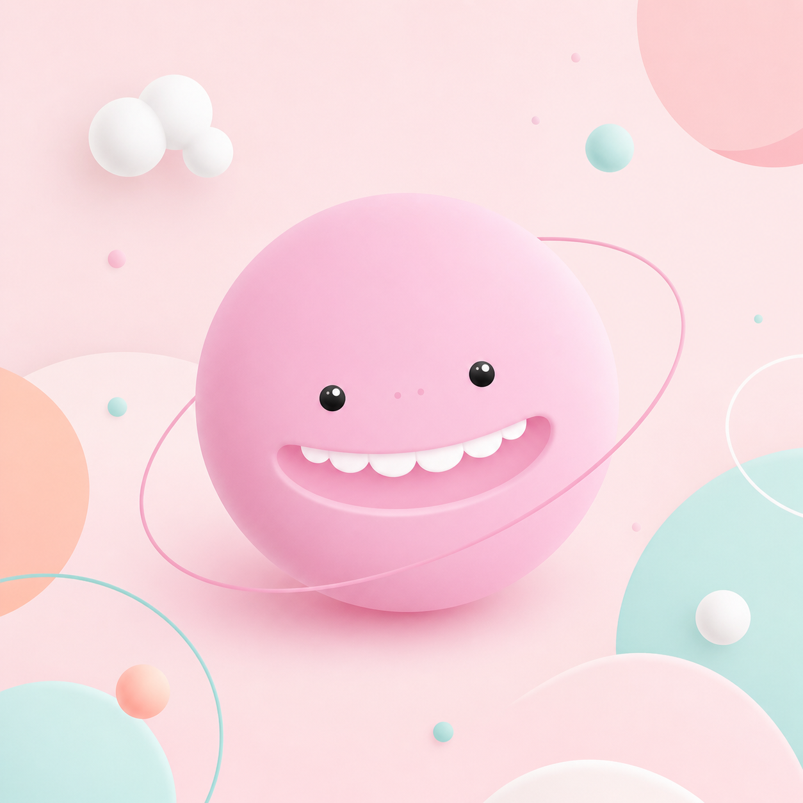

How are you
feeling today?

Happy
moodly
CHECK-IN COMPLETE
You showed up.
Your mood is saved. A small note is enough for today.
Choose the feeling that is closest right now.

Happy
moodly
CHECK-IN COMPLETE
Your mood is saved. A small note is enough for today.
Choose the feeling that is closest right now.